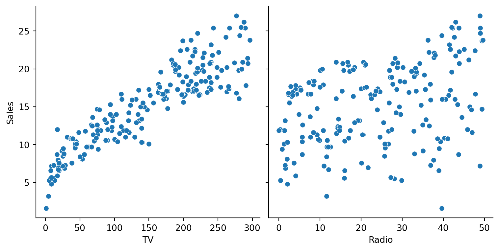
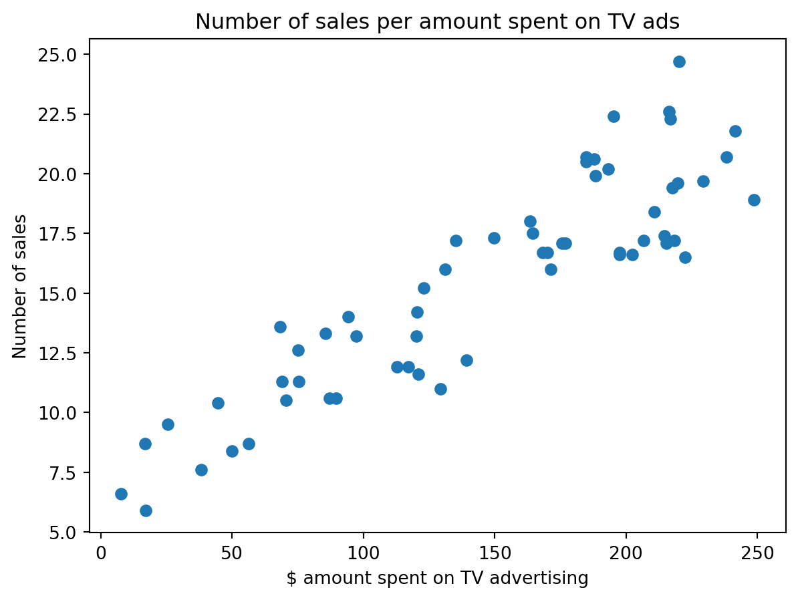
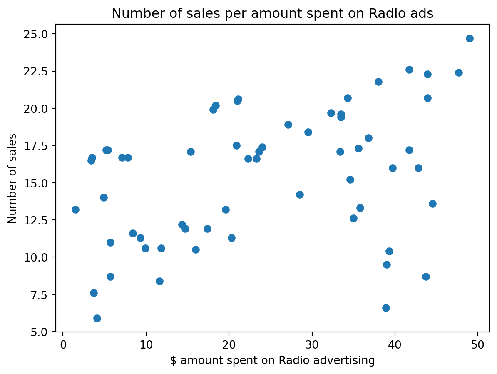
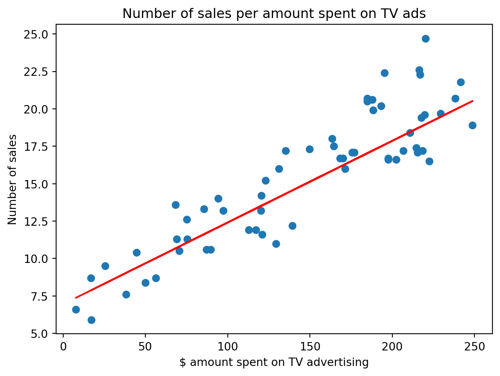
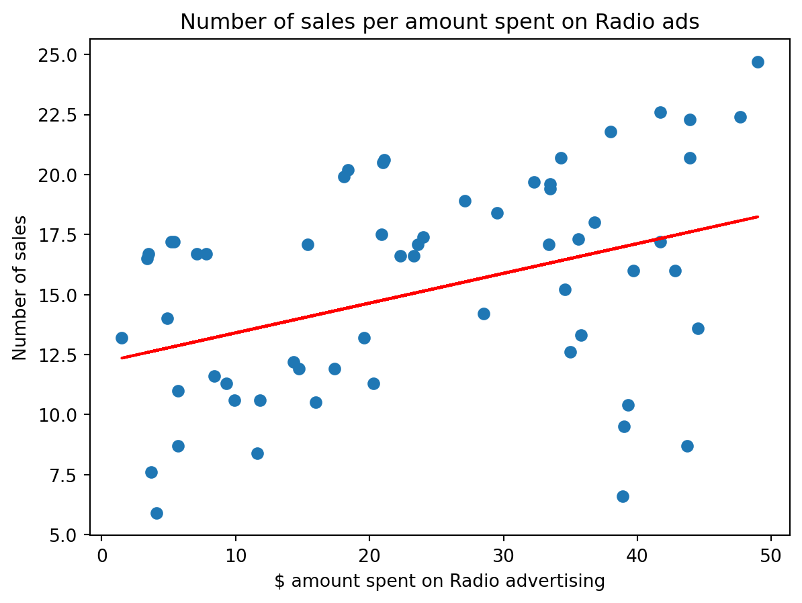

Code
import pandas as pd
import numpy as np
import matplotlib.pyplot as plt
import seaborn as sns
from sklearn.model_selection import train_test_split
from sklearn.linear_model import LinearRegressionEllie Woodward
November 20, 2023
In the realm of machine learning, predictive modeling stands as a strong force for reshaping industries and driving innovation. At the core of this field lies linear regression, a fundamental yet powerful statistical technique that serves as a cornerstone for making predictions based on data. Imagine we have data points that represent things like house prices and their sizes. Linear regression helps find a straight line that best fits these points, allowing you to predict the price of a house based on its size. In machine learning predicting this outcome based on the input data can help us predict future prices or see trends. Linear regression is commonly used in all different types of industries, it helps companies make informed decisions.
Marketing and advertising industries heavily rely on trend analysis. In pursuit of understanding these trends, I obtained a dataset from Kaggle.com that details sales figures correlated with expenditures on TV, newspaper, and radio advertising.
| TV | Radio | Newspaper | Sales | |
|---|---|---|---|---|
| 0 | 230.1 | 37.8 | 69.2 | 22.1 |
| 1 | 44.5 | 39.3 | 45.1 | 10.4 |
| 2 | 17.2 | 45.9 | 69.3 | 12.0 |
| 3 | 151.5 | 41.3 | 58.5 | 16.5 |
| 4 | 180.8 | 10.8 | 58.4 | 17.9 |
Our primary focus lies in assessing the correlation between TV advertisement spending, radio advertisement and sales. Initially, we’ll improve the dataset by eliminating irrelevant columns and then juxtapose the pertinent data for analysis.

Upon observation, the Radio data exhibits considerably higher dispersion compared to the TV data. Moving forward, our aim is to train a linear model. Employing the ‘train_test_split’ technique, we’ll allocate 70% of the data for training and 30% for testing, separately for both TV and radio datasets.
x_tv = advertisement_df[['TV']]
y_tv = advertisement_df['Sales']
x_train, x_test, y_train, y_test = train_test_split(x_tv, y_tv, test_size = 0.3, random_state = 100)
x_radio = advertisement_df[['Radio']]
y_radio = advertisement_df['Sales']
x_train_radio, x_test_radio, y_train_radio, y_test_radio = train_test_split(x_radio, y_radio, test_size = 0.3, random_state = 100)
lrm_tv = LinearRegression().fit(x_train, y_train)
lrm_radio = LinearRegression().fit(x_train_radio, y_train_radio) 

Our visual analysis echoes previous observations. The TV dataset exhibits a more compact ascending structure, suggesting a positive linear relationship, while the radio dataset diverges noticeably. Subsequently, we’ll utilize the trained linear regression model to predict sales for both TV and radio advertising channels.
y_pred_lrm_tv= lrm_tv.predict(x_test)
y_pred_lrm_radio= lrm_radio.predict(x_test_radio)
lrm_diff = pd.DataFrame({'Actual Sales': y_test, 'Predicted Sales for TV': y_pred_lrm_tv,
'Predicted Sales for Radio': y_pred_lrm_radio})
lrm_diff.head()| Actual Sales | Predicted Sales for TV | Predicted Sales for Radio | |
|---|---|---|---|
| 126 | 6.6 | 7.374140 | 16.985157 |
| 104 | 20.7 | 19.941482 | 16.415126 |
| 99 | 17.2 | 14.323269 | 17.332133 |
| 92 | 19.4 | 18.823294 | 16.315990 |
| 111 | 21.8 | 20.132392 | 16.873629 |
While the model’s predictions for TV advertisement sales align closely with actual figures, its performance in predicting radio advertisement sales falls significantly short. This discrepancy signals that a linear model might not be suitable for radio advertising, which we’ll corroborate by graphing the data.
Text(0.5, 1.0, 'Number of sales per amount spent on TV ads')

Comparing the two graphs highlights the clear linear relationship between TV advertisement spending and sales, contrasting with the inconsistency in radio advertising. The limitations of the linear model’s fit to the radio data suggest a need for non-linear regression, indicating a potential requirement for a more curved or complex model to better represent this relationship.
Insights learned from this visualization suggest that the company’s sales potential significantly benefits from TV advertising over radio. Armed with this data, a marketer could assert, “Increased investment in TV advertising directly correlates with higher sales.” Conversely, the erratic nature of radio advertising data may prompt a recommendation to reconsider its budget allocation due to its scattered and less predictable impact on sales.
Linear regression, a fundamental tool in machine learning, enables us to decipher relationships between variables. Our analysis highlighted its efficacy in predicting sales based on TV advertising spending. In conclusion, linear regression helps us with uncovering correlations, making predictions, guiding decisions, and so much more, becoming a versatile tool across diverse fields of study and application.
Thank you!
References: IBM Linear Regression